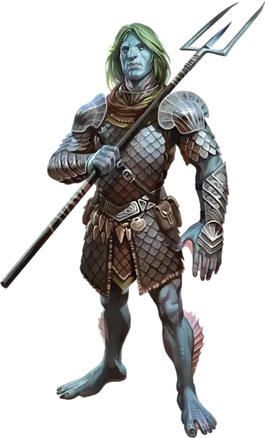

Тритон
Triton

Ах, тритоны. Представьте себе эльфов, которые несколько столетий прожили глубоко на дне моря, где ничто не мешало расти их высокомерию и самомнению. Но по крайней мере, тритоны провели это время, сражаясь с сахуагинами и с кем похуже, так что на них можно положиться в бою.
— Брего Стоунхарт, капитан корабля
Тритоны охраняют океанские глубины, строя маленькие поселения около глубоководных впадин, порталов в стихийные планы и других опасных мест, далеких от глаз народов суши. Признанные защитники океанских глубин, в последние годы благородные тритоны стали все более и более активными в мире на поверхности.
Водные крестоносцы
Столетия назад, тритоны пришли в мир в ответ на растущую угрозу стихийного зла. Тритоны вели много войн против своих врагов в Плане Воды, гоня их в Затемнённые Глубины, куда они сбегали в высокое давление и кромешную тьму.
Со временем, тритоны заметили, что их древние стихийные противники затихли. Экспедиции в глубины показали, что кракены, сахуагины и намного более худшие враги сбежали с Плана Воды на Материальный План.
Тритоны, ведомые чувством долга и ответственности, не позволили своим противникам убежать так легко. Великий конклав тритонов собрал добровольцев, владеющих оружием и магией, в экспедиционный корпус, чтобы они пришли в Материальный План и нашли своих врагов.
Эти тритоны распространились по океанам и основали протектораты, следящие за глубокими впадинами, порталами, подводными пещерами, и другими местами, где могут скрываться их враги. Они победили своих противников, которых нашли, а остальных заставили попрятаться, и теперь очень гордятся тем, в каком долгу у них все оказались.
Изгнав врагов в самые темные глубины моря, тритоны осели, следя за малейшими знаками их возвращения. Со временем тритоны расширили свое наблюдение за морским дном за пределы окрестностей своих первоначальных поселений и построили аванпосты для торговли с другими расами. Несмотря на это распространение, о них знают немногие. Их поселения так отдалены, что даже мерфолки и морские эльфы редко встречают их.
Надменная знать
Как результат своей изоляции и недопонимания Материального Плана, тритоны производят впечатление надменных и высокомерных. Они рассматривают себя как хранители морей, и ждут, что другие существа будут относится к ним если не с глубоким почтением, то хотя бы с уважением.
Хотя подобное отношение и возмущает других, но в нем есть доля истины. Мало кто знает о великих победах тритонов над ужасными подводными угрозами. Тритоны снисходительны к такому невежеству и с радостью поясняют на сколько все перед ними в неоплатном долгу.
У тритонов также есть обыкновение появляться из своей изоляции с мыслью, что другие народы их поприветствуют как уважаемых союзников и наставников. Это опять же вызвано расстояниями. Ограниченное знание тритонов о мире оставляет их в неведении о королевствах, войнах и прочих трудностях мира на поверхности. Тритоны с готовностью рассматривают все это как мелочи, происходящие всего лишь на заднем плане по сравнению с ролью тритонов, как защитников мира.
Непоколебимые борцы
Несмотря на свои отталкивающие манеры, в глубине души тритоны – доброжелательные существа, убежденные, что другие цивилизованные расы заслуживают их защиты. Их отношение может злить, но когда пиратские флоты рыскают по волнам, или пробуждается кракен, они одни из первых берутся за оружие, чтобы защитить других.
Тритоны с готовностью жертвуют собой ради общего блага. Они без сомнений будут сражаться и умирать за людей, мерфолков и других существ. Из–за своей замкнутости они не замечают историю других народов, но их терзает чувство вины за то, что они позволили злу из Плана Воды прийти на Материальный План и угрожать его жителям. Тритоны полагают, что это их долг чести, и они будут сражаться и умирать, чтобы оплатить его.
Время от времени их рвение и незнание мира вводят их в заблуждение. Тритоны, впервые сталкиваясь с другими существами, могут их недооценить, что делает тритонов уязвимыми для обмана. Имея сильные военные традиции, тритоны могут иногда слишком поспешно ввязываться в схватку.
Чужаки на поверхности
Учитывая их изоляцию, большинство тритонов никогда не было на поверхности. Для них трудна мысль, что они не могут так же легко двигаться вверх и вниз, как в воде, а смена сезонов сбивает их с толку.
Тритоны также считают разнообразные социальные институты, королевства и прочие обычаи изумительным. Несмотря на всю свою гордую культуру, они становятся наивными в сухопутном мире. Типичный протекторат тритонов прочно систематизирован, организован и объединен вокруг общего дела. Тритона на поверхности легко сбивают с толку множество союзов, противостояний и мелких обид, которые мешают поверхностным народам объединиться.
В худшем случае высокомерие может мешать тритонам пытаться понять, каким образом устроен мир поверхности. Для тритона легко списать непонятные социальные нормы на варварство, слабость, или трусость поверхностных народов.
Индивидуальность тритонов
Далекие от безупречности, эти заступники добра желают его окружающим, но другие их легко разочаровывают. Вы можете выбрать самостоятельно, определить броском кубика или переделать причуду из таблицы Причуд Тритона. Используйте причуду как идею относительно того, как Вы будете изображать своего персонажа.
Причуды тритонов
| к6 | Причуда |
| 1 | Вы формулируете просьбы как приказы, которым вы ожидаете, что другие будут подчиняться. |
| 2 | Вы энергично восхваляете величие вашей цивилизации. |
| 3 | Вы изучали древний вариант Общего, и используете в вашей речи «Азъ», «есьм», «доколе» и т.д. |
| 4 | Вы предполагаете, что люди говорят вам правду о местных нравах и обычаях. |
| 5 | Поверхностный мир — поразительное место, и вы записываете все его детали в журнале. |
| 6 | Вы ошибочно полагаете, что народы поверхности знают историю вашего народа и преклоняются перед нею. |
Имена тритонов
У большинства имен тритонов есть два или три слога.
Мужские имена как правило заканчиваются гласным и буквой «-с», а женские имена традиционно заканчиваются на «-н». Тритоны используют свой домашний протекторат в качестве фамилии, добавляя гласную вместе с «-т» на конце названия протектората.
Женские имена тритонов: Белтин, Вуолин, Влэрин, Дьютин, Отанин, Филорин, Шелрин, Эрин.
Мужские имена тритонов: Водос, Делнис, Джимас, Зунис, Керос, Корус, Молос, Налос.
Фамилии тритонов: Алорсат, Вууваксат, Пуманат.
Особенности тритонов
Ваш персонаж-тритон обладает следующими особенностями.
Увеличение характеристик. Значения ваших Силы, Телосложения и Харизмы увеличиваются на 1.
Возраст. Тритоны достигают зрелости к 15 годам, и могут дожить до 200 лет.
Мировоззрение. Любое.
Размер. Тритоны немного ниже чем люди, в среднем около 5 футов (1,5 метра) в высоту. Ваш размер — Средний.
Вот как определить свой рост и вес случайным образом, начиная с выбора модификатора размера:
Модификатор размера = 2к10
Высота = 4 фута + 6 дюймов + модификатор вашего размера в дюймах.
Вес в фунтах = 90 + (2к4 × ваш модификатор размера)
Скорость. Ваша базовая скорость ходьбы составляет 30 футов, также вы обладаете скоростью плавания 30 футов.
Амфибия. Вы можете дышать как воздухом, так и под водой.
Управление воздухом и водой. Как дитя моря, вы можете воззвать к элементальной магии воздуха и воды. Вы можете накладывать туманное облако [fog cloud] с помощью этой особенности.
Начиная с 3-го уровня, вы также можете накладывать заклинание порыв ветра [gust of wind] с помощью этой особенности. Начиная с 5-го уровня, вы также можете накладывать заклинание водяная стена [wall of water] с помощью этой особенности.
После накладывания одного из этих заклинаний с помощью особенности вы должны закончить продолжительный отдых, прежде чем сможете вновь наложить его таким образом. Харизма — ваша базовая характеристика для этих заклинаний.
Тёмное зрение. На расстоянии в 60 футов вы при тусклом освещении можете видеть так, как будто это яркое освещение, и в темноте так, как будто это тусклое освещение. В темноте вы не можете различать цвета, только оттенки серого.
Посланник моря. У водных животных есть исключительная близость к вашему народу.
Вы можете передавать простые идеи животным, которые могут дышать под водой. Они могут понимать значение ваших слов, хотя у вас нет никакой специальной способности понять их в ответ.
Стражи глубин. Приспособленность к даже самым экстремальным океанским глубинам даёт вам сопротивление урону холодом. Вы также игнорируете любые негативные эффекты, вызванные глубиной и подводной окружающей средой.
Языки. Вы можете говорить, читать и писать на Общем и Первичном языках.
Разновидности. В мультивселенной D&D существует несколько видов тритонов. С разрешения вашего Мастера вы можете выбрать один из них.
Тритон (MOoT)
Тритоны обитают по всему морю Сирен, самозабвенно исследуя мир коралловых лесов и скрытых под водой гор, о котором не дано знать «сушнякам» с поверхности. Хотя большинство из них всю жизнь проводит в море, они не привязаны к глубинам. Следуя врождённому любопытству, некоторые тритоны покидают царство волн, желая воочию увидеть наполненный чудесами мир, раскинувшийся вовне.
Рождённые Морем
Тритоны — земноводный народ; они прекрасно чувствуют себя в воде, но не теряют подвижности на суше. Их тела покрыты мелкой чешуёй, цвет которой варьирует от зеленовато-жёлтого до тёмно-фиолетового через все оттенки синего. Их голову венчает выдающийся гребень, а на плечах, предплечьях и голенях растут плавники. Пальцы на руках и ногах соединены перепонками, благодаря которым тритоны могут плавать с той же скоростью, что и бегать.
Хорошо приспособленные для жизни на глубине, тритоны почти не носят одежды, если не считать доспехов во время битвы. Бóльшую часть своих вещей они изготавливают из материалов, найденных в океане: кораллов, водорослей, раковин, костей, колючек морских ежей, панцирей чудовищных ракообразных и так далее. Принадлежа к древней развитой цивилизации, тритоны знают, как нужно обрабатывать такие материалы, чтобы получать из них роскошные ткани и крепкое оружие, не уступающие тому, что изготавливается на суше.
Ведомые Тассой
Хотя тритоны воздают почести многим богам, они склонны ставить Тассу, владычицу морей, превыше всех прочих божеств. Почитатели видят в ней верховное божество пантеона, веря, что однажды она возвысит их народ над чудовищами моря и полисами суши.
Глубины познания
Многие тритоны помешаны на сухопутной культуре. Самые любопытные из них изучают затонувшие руины и потерпевшие крушение корабли, просеивая обломки в поисках того, что может привлечь их внимание. Часто такие тритоны собирают богатые коллекции определённых предметов или знаний, охотно обмениваясь друг с другом и постепенно становясь своего рода экспертами в той или иной области. Некоторые тритоны подходят к изучению сухопутных народов с истинно научной строгостью. Такие учёные часто выдвигают гипотезы, которые согласуются с их коллекциями, и охотно проверяют их при каждой новой встрече с сухопутными.
Миф о далаке и кракене
Далак считал себя вполне заурядным тритоном — в меру любопытным, сообразительным, возможно, получившим в дар от богов выдающийся ум. Но он был рассеян и часто отвлекался, попусту разбрасываясь своим потенциалом, будто зёрнами по бесплодным камням. Так было до тех пор, пока из глубочайших глубин океана не восстал ужасный кракен и не начал буйствовать, угрожая всей Далаковой общине. Пока чудовище неумолимо приближалось, Далак лихорадочно искал способ изменить его курс. Он работал денно и нощно, но все его замыслы потерпели крах. Всё, что Далак знал в своей жизни, было уничтожено, стёрто в порошок неумолимой мощью кракена.
Но на этом кракен не остановился, а направился к прибрежному человеческому поселению. Среди развалин его дома Далака постигло откровение. Трудясь не покладая рук, тритон смастерил чудесное приспособление, которое усмирило кракена и спасло город. Сейчас Далак живёт внутри исполинского панциря кракена, посвящая всего себя работе. Его сердце разбито, но разум постоянно сосредоточен на том, как воплотить в жизнь его таланты.
Имена тритонов
Имя тритона — символ выбора. Достигнув совершеннолетия, тритон может отказаться от имени, которое ему дали родители. Некоторые предпочитают сохранить своё имя, но большинство выбирают то, которое представляет собой взрослого, которым они стали. Тритоны могут даже выбрать другие имена, переходя от одной фазы жизни к другой, или после значительных жизненных событий. Такие изменения в жизни могут представлять собой уход из домашнего сообщества или переход к сухопутному народу. Тритоны также имеют подвижное понятие пола и могут свободно менять имена при смене гендерной идентичности.
Женские имена: Амата, Гнорцида, Леурибия, Маргоместра, Нереонида, Олея, Самата, Сафиро, Тетена, Теанея, Фектра.
Мужские имена: Биссей, Цет, Галаук, Галитон, Кенесс, Одекс, Паламон, Понтрей, Ретей, Фразий.
Особенности тритонов
Ваш персонаж-тритон обладает следующими особенностями.
Увеличение характеристик. Значения ваших Силы, Телосложения и Харизмы увеличиваются на 1.
Возраст. Тритоны достигают зрелости к 15 годам и могут дожить до 200 лет.
Мировоззрение. Тритоны склонны к нейтралитету. Их культура побуждает их помнить о жизненных течениях, зная, когда обуздать волны судьбы, а когда — плыть по ним.
Размер. Тритоны немного ниже чем люди, в среднем около 5 футов (1,5 метра) в высоту. Ваш размер — Средний.
Вы можете определить свой рост и вес случайным образом, начиная с выбора модификатора размера:
Модификатор размера = 2к10
Высота = 4 фута + 6 дюймов + модификатор вашего размера в дюймах.
Вес в фунтах = 90 + (2к4 × ваш модификатор размера)
Скорость. Ваша базовая скорость ходьбы составляет 30 футов; также вы обладаете скоростью плавания 30 футов.
Амфибия. Вы можете дышать как воздухом, так и под водой.
Управление воздухом и водой. Как дитя моря, вы можете воззвать к элементальной магии воздуха и воды. Вы можете накладывать туманное облако [fog cloud] с помощью этой особенности.
Начиная с 3-го уровня, вы также можете накладывать заклинание порыв ветра [gust of wind] с помощью этой особенности. Начиная с 5-го уровня, вы также можете накладывать заклинание водяная стена [wall of water] с помощью этой особенности.
После накладывания одного из этих заклинаний с помощью особенности вы должны закончить продолжительный отдых, прежде чем сможете вновь наложить его таким образом. Харизма — ваша базовая характеристика для этих заклинаний.
Тёмное зрение. На расстоянии в 60 футов вы при тусклом освещении можете видеть так, как будто это яркое освещение, и в темноте так, как будто это тусклое освещение. В темноте вы не можете различать цвета, только оттенки серого.
Посланник моря. У водных животных есть исключительная близость к вашему народу.
Вы можете передавать простые идеи животным, которые могут дышать под водой. Они могут понимать значение ваших слов, хотя у вас нет никакой специальной способности понять их в ответ.
Стражи глубин. Приспособленность к даже самым экстремальным океанским глубинам даёт вам сопротивление урону холодом, и вы игнорируете любые негативные эффекты, вызванные глубиной и подводной окружающей средой.
Языки. Вы можете говорить, читать и писать на Общем и Первичном языках.
Огромное спасибо паблику «Миры Доминии» за основу перевода.
— Господин Финик